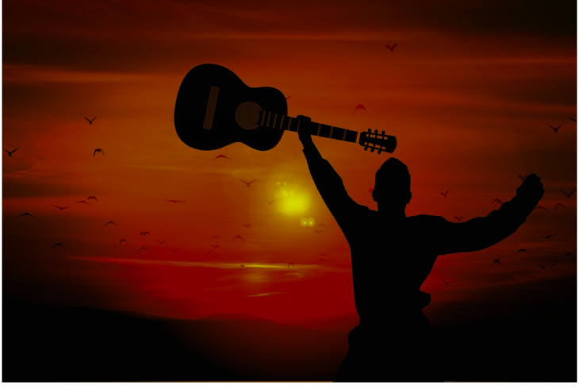
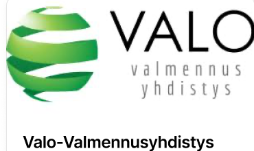
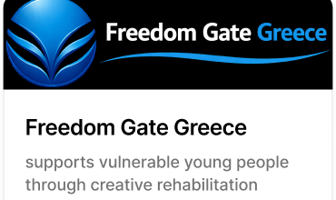
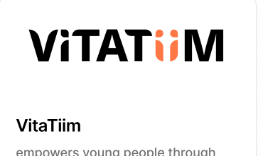
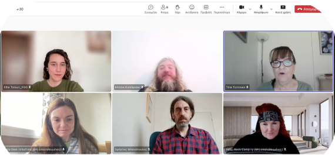
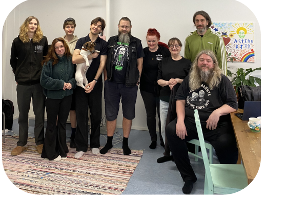
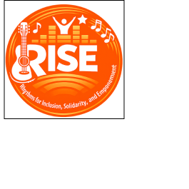

Erasmus+ KA210-YOU programme briefly
Erasmus+ KA210-YOU supports small youth organisations in creating inclusive, community-driven, and international projects through simplified European partnerships.
RISE – Rhythms for Inclusion, Solidarity, and Empowerment

Because every young person deserves spaces where they feel seen, supported, and inspired.
Erasmus+ KA210-YOU supports small youth organisations in creating inclusive, community-driven, and international projects through simplified European partnerships.
RISE empowers young people with fewer opportunities through creative, music-based, and non-formal learning, helping them build confidence, express themselves, and actively participate in their communities.
RISE supports young people facing social, mental health, or economic challenges, while equipping youth workers and other professionals with creative, music-based methods for inclusion and well-being.
A European project uniting partners from Finland, Estonia, Greece, and Romania to empower young people through music-based, creative, and non-formal activities.
RISE unites organisations from Finland, Estonia, and Greece to empower young people through creativity, inclusion, and shared expertise. Together, we develop practical tools that promote wellbeing, participation, and lasting social impact.

Empowers vulnerable young people through education, rehabilitation, and creative learning, helping them build confidence, develop life skills, and access education and employment.

Supports vulnerable young people through creative rehabilitation programmes while equipping professionals with innovative approaches to youth empowerment and social inclusion.

Empowers young people through non-formal learning, volunteering, and international youth work, promoting inclusion, active participation, and equal opportunities.
Erasmus+ KA210 projects are flexible, small-scale partnerships that guide organisations from planning to implementation through clearly structured activities, supporting collaboration, creativity, and lasting impact.
Activity 1 covers project management, partner coordination, communication, meetings, and evaluation to ensure the successful delivery of RISE.
Activity 2 develops a practical handbook of music-based methods, tested with young people and adopted through international collaboration and local feedback.
Activity 3 strengthens youth workers’ skills through hands-on music-based training, helping them apply creative and inclusive methods in their everyday practice.
Activity 4 engages young people in designing and testing creative music-based workshops that foster inclusion, participation, and wellbeing while helping improve the RISE methodology.
Activity 5 promotes RISE through digital content, a project website, social media, and an online webinar, making the project’s results accessible across Europe.
RISE uses music-based, non-formal learning to promote self-expression, participation, and wellbeing. Facilitators create inclusive, supportive environments where young people can connect, grow, and learn through creative activities.
Online Preparatory Workshop brought together all project partners to launch Activity 2, agree on a shared methodology, and plan the collection of good practices. The meeting established a common framework for developing the RISE Handbook and ensured coordinated collaboration across all partner countries.
The RISE partnership held its first Transnational Project Meeting on 1–2 June 2026 in Helsinki, hosted by Valo-Valmennusyhdistys. The meeting marked the official kick-off of the project and brought together representatives from all partner organisations to review the work plan, clarify roles, and ensure a shared understanding of the project’s goals, methodology, and expected results.
Day 1 focused on launching the project, aligning partners, and planning the next steps. The consortium reviewed project activities, confirmed coordination and communication procedures, and agreed on the roadmap for the RISE Handbook, training, Creative Try-Outs, and dissemination.

The second day offered a warm, informal gathering at the LYSIS Valo Youth Center. Partners met with their inspiring Finnish organisations — Kuntoutus, Art Thing Live Finland, and Rock Camp — who shared their practical activities and creative approaches to participation, wellbeing, and inclusion.

Tina Tõnisson
Coordinator
Tel: +358 400 618878
Email: tina.tonnisson@valo-valmennus.fi
